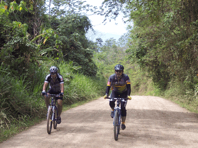
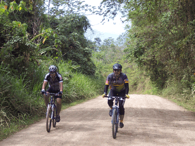

Our rides are customized to each group.
Groups can be from just 1 person and up to... as many as you want!
Also, you can choose the dates, the number of days biking, the difficulty of the rides...
Don’t worry. Just tell as all you want and we will try our best!
Most groups do it in 6 days, but some stronger groups prefer to do it in just 4 or 5 days, and some other prefer to do it in a more relax way in 7 or 8 days.
(By the way, we apologize for our written English. Don’t worry, our rides are better!)
About 400 km. / 250 miles on the bike (plus transfers out and back to San Jose).
Most of this distance goes through un-paved country roads, or paved roads with little traffic.
We have also many optional sections in double and single tracks, for those who want something more technical.
| stages: | 1 | 2 | 3 | 4 | 5 | 6 |
| km: | 65 | 60 | 65 | 70 | 90 | 15 |
| climb in meters: | 200 | 1500 | 1300 | 200 | 1500 | 50 |
| stages: | 1 | 2 | 3 | 4 | 5 | 6 |
| miles: | 40 | 37 | 40 | 43 | 56 | 10 |
| climb on feet: | 650 | 4900 | 4200 | 650 | 4900 | 160 |

Physical level
Medium.
There are some very hard climbs, but in case you want, you can ride on the assistance-car, so really, it is not necessary to be very fit.
Technical level
Easy/medium.
High, in some special sections. Most of this ride goes trough quiet country roads, paved and un-paved. Optional single and double track sections will be available some days. The assistance-car will be available everyday in case someone gets tired...
Arrival and welcome to Costa Rica
Enjoy San Jose
Transfer to the Pacific coast. After swimming in the ocean, enjoy riding by the beach, palm trees...
Very flat day.
We sleep near the coast, where we can swim again...
-65km. / 200m. elevation gain.
-40mi. / 650f. elevation gain.
We start early as we have a very hard climb ahead. Some of us might ride in the assistance-car... The rivers and the tropical forest around us are just breathtaking!! We sleep over the clouds, on the way to the continental divide.
-60km. / 1500m. elevation gain.
-37mi. / 4900f. elevation gain.
Climb continues in the morning. Then, the downhill begins!!
We can choose the way down according to our skills...
-65km. / 1300m. elevation gain.
-40mi. / 4200f. elevation gain.
In the morning we have 2 options... By a small road around a mountain... or crossing it!! We will give you details so you can decide... After lunch we bike trough sugar plants. We will sleep under the Volcan Turrialba and its smoke...
-70km. / 200m. elevation gain.
-43mi. / 650f. elevation gain.
We start again with a hard and very beautiful climb. From the top, for the first time, we see the Caribbean sea!! We start an easy and fast down hill... We arrive to the sea after some kilometers under banana trees.
-90km. / 1500m. elevation gain.
-56mi. / 4900f. elevation gain.
Today is very easy, but a great day too. The nature and the beaches are just great. After lunch we will go back to San Jose.
-15km. / 50m. elevation gain.
-10mi. / 160f. elevation gain.
Beside this 6 days trip, you can arrive earlier or leave later, to enjoy our beaches, National Parks...

 



Also as an example, we show you 2 options to make this ride:
Transfers
Assistance car (6 days)
Luggage transfer (6 days)
Lodging and breakfast (5 nights)
GPS tracks
4 people: $980/person
10 people: $840/person
Bike guide
Transfers
Assistance car (6 days)
Luggage transfer (6 days)
Lodging and breakfast (5 nights)
GPS tracks
4 people: $1090/person 10 people: $960/person
-Because we have many groups, and everything is already prepared and working!
-Because as we said before, this is mostly our passion!
-And because one of our concerns is helping the regions we cross, and the little business we work with, and we know each group means a lot for them!
These are our regular benefits and prices. Discounts or supplements can apply according to final number of bikers, dates of registration, dates of the tour... Don’t hesitate to ask!
Lodging included is basic, but groups always tell us it is good enough. We will send you the details according to each group. Also, we will send you more options in case you want to upgrade or choose a different lodging...
Lunch and dinner are not included in most groups. This way, you can choose exactly what you want to eat.
Also, we can take care of:
-Nights in San Jose. Depending on the lodging each group prefers, and the number arrival and departure. From $20 to $80/person/night.
-Bike rent. Let us know if you want to rent and we will send you the options... $20 to $60/bike/day.
We can also help you with every other activity you would like to do. We will not take care of them, but we can advise you, and then you can book by your self.
First step is to send us an email with the itinerary you want, the approximate dates, the number of days biking, the number of people... and every other thing you consider important.
In very short time we will send you a proposal.
We will probably exchange some more emails... adjusting the ride, the lodging, the nights in San Jose... Till we get your perfect program!
When you say it is ok, your group will be confirmed...
We will make the local bookings...
And you can buy plane tickets.
About payment, we don’t need any money in advance.
Usually, groups only advance, by credit card, the first night in San Jose.
The main payment is made once we meet face to face in Costa Rica.
Just send un an email with all your questions!
Many of our groups come from bike stores, gym clubs, sport associations...
Again, drop us some lines and we’ll send you a proposition!
Probably you can come to Costa Rica with just your valid passport.
Don’t hesitate to ask us according to your country.
Nice temperature all year. Warmest month is April, may be too hot. It is advisable to avoid September, October and November because of heavy rains in many parts of the country.
Our country is worldwide known for our friendly people, our culture, and for being one of the happiest countries in the world. Soon after your arrival you will also be saying... Pura Vida!!!
While riding in the nature, please, be careful not to through any kind of garbage.
Also, please, be kind with the animal and plant life.
Thank you!